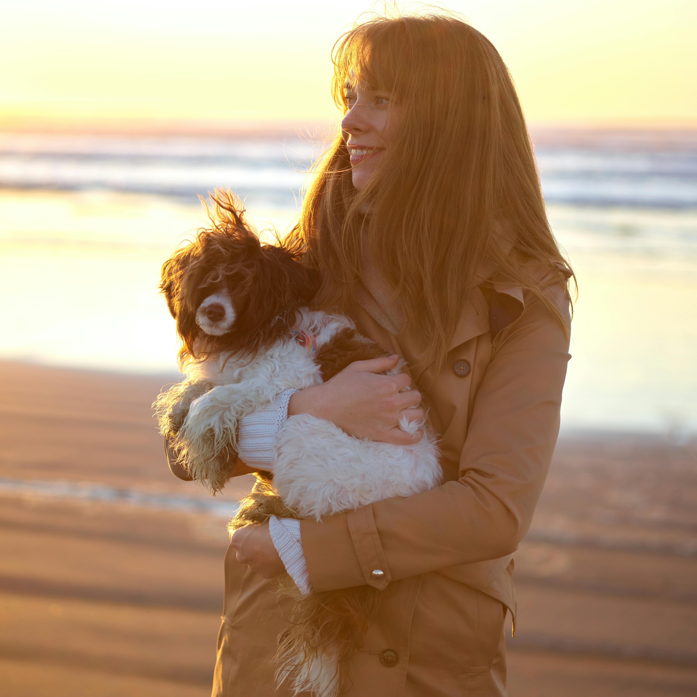

Content
- Tess Roode (ID: 221052)
- Nina Straga (ID: 221424)
- Demi Middelkoop (ID: 223762)
- Karla Šantić (ID: 221443)
| # | Student ID | Value | Name and link of content |
|---|---|---|---|
| 1. | 221052 | Explanation of products | General & Specific |
| 2. | 221424 | Vision and Values | Vision & Values |
| 3. | 223762 | Brand persona | Brand persona |
| 4. | 221443 | Explanation of the Moof Map | Moof map |
General brand information
We are Mooff. The online platform that is dedicated to making you and your dog feel safe during every step of your walk together, no matter what time of the day. We are there with you, to ease your mind.
We not only do this by bringing you high-quality light harnesses tailored for your dog, but also by providing you with real-time information about the light conditions in your neighbourhood, on the unique Mooff Map.
Get ready to confidently light up your walk with Mooff. We are waiting for you.
Vision
In a world where darkness brings around a feeling of unsafety, we believe in lighting the way for dog owners, because only then they can walk their dog(s) feeling empowered and safe.
Values
Safety
Mooff wants to make people feel safe. We are committed to safety and prioritise it above all else. Our products and Mooff Map, allow people to feel at ease, no matter the lighting conditions they face.
Reliability
It is in our DNA to always go that extra mile, especially when it regards safety. People can fully rely on us, as we provide them with consistent and trustworthy guidance along their way.
Empowerment
People should be able to feel empowered at all times, even when navigating through the darkness. This is where Mooff shines. Making people feel empowered, knowing we will always have their backs, even in the uncertainties of the night.
Support
We offer support on literally every step of people's walk. Whether this is by shining a light on well lit walking routes, or by offering products that help feel seen, secure and safe.
Brand persona
Name: Anna van Doorn
Age: 26
Occupation: Online Marketeer
Location: Breda, the Netherlands
Anna van Doorn is a twenty-six year old woman, living in a house with a small garden in the city centre of Breda. Anna graduated two years ago and works as an online marketeer for a well-known international fashion brand. Her position allows her to work remotely. As she is a true home bird, she does not mind working from home. Her mother, however, is concerned she spends too much time alone behind her laptop and therefore urged her to get a dog. Anna was sceptical at first, but encouraged by her mother and best friend Mirthe, who owns a dog as well, she decided to get a dog. That was two months ago and so far, she has little regrets. Juuls, her dog, has quickly become part of her lifestyle. Taking him with her on long beach walks, visiting friends and family and enjoying nights in watching Netflix series.
Some more general information about Anna. She has a diverse group of friends, is very conscious of what she eats, and sometimes struggles to balance meeting friends and spending enough time with family, while also staying active. She tries to swim at least two times a week, but in the end, often prioritizes social activities over working out. Besides her social activities, Anna values spending time alone and her independence. Her work gets her a salary that allows her to live comfortably, without having to worry too much about her finances. She is ambitious regarding her job and loves sharing her life on social media. Anna has quite a large amount of followers on Instagram. On her account, she shares her daily life with Juuls and fashion insights. She is inclined to spend more than 1,5 hours a day on Instagram, which is her most used social media platform.
Besides being a home bird, Anna is a night owl. Meaning she often stays up late to finish things for work, her social media page or meeting friends. Despite being a night owl, Anna has been experiencing feelings of uneasiness while taking Juuls on his final walk, before she goes to bed. She therefore often tries to walk together with her best friend Mirthe or only goes for a small loop close to her house. She has been talking about this feeling with her friends and mom, but cannot quite pinpoint what causes this feeling.
In general, Anna is eager to live her life to the fullest. She is happy with the life she lives together with Juuls, but is also still on the lookout for a man to potentially start a family with. She sometimes worries about her possibilities of starting a family in her early thirties, if she spends enough time with her friends and family and in general, she is inclined to worry about little things, despite being happy with her life. This keeps her awake at night from time to time. For now, her focus is on her career, personal well-being, expanding her social media page and finding the right work-friends-family-health balance. Anna enjoys it when she can push her boundaries and get out of her comfort zone. Through everything, she tries to keep a positive attitude and motivates herself to continue working on her life goals.
Explanation of products
General information, on top of the product page
At Mooff, we want to make you and your dog feel safe. No matter the conditions, we are by your side. Feeling unsafe while walking your dog in the evening twilight? Planning to go on an early morning run? We got you covered.
Not only our Mooff Map provides you with a feeling of safety. The reliable light products we offer you and your dog, shine a fresh light on your daily walks. Making you feel empowered and safe. Exactly what we at Mooff stand for.
What are you and your dog waiting for? Join us for a brighter walk after dark.
Information about the product itself
Ready to brighten up your walk?
We want to be there with you and your dog, every step of your adventure together. That is why our light products are made to last forever. No need to worry about charging, the batteries of the dog harness charge automatically while your dog walks. We do not take it lightly. We promise you and your dog will never run out of light anymore, paw promise.
The harness is made of only the most comfortable materials. Allowing for your dog to move freely, while being clearly visible at all times.
Our light harness + your dog + mud baths = a match made in heaven. Dogs will be dogs, we all know that. Therefore, mud baths are sometimes unavoidable. Isn't it great that our light harnesses can be machinewashed? We thought so too.
All (dog) sizes matter. That is why the light harness is designed to easily be adjusted to the size of your dog. Allowing every dog, no matter what breed, to shine.
The explanation of the Mooff map
Experience a safe feeling during your (nightly) walks with Mooff Maps. Our innovative map shows you busy areas, guides you through well-lit paths and alerts you ahead of time, when needed. Mooff into your walks with confidence, knowing we will Mooff with you.
How it works? That is simple. Based on your location and preferred walking distance, the Mooff Map will create a personalised route. Whether you are looking for a luminous path to walk on or an area where more dog owners are present, the Mooff Map will point it all out to you.
Now, the only thing for you left to do is finding the leash and asking your dog to join you for a walk outside. We will take care of the rest. Let’s Mooff!